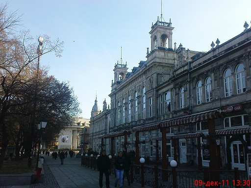
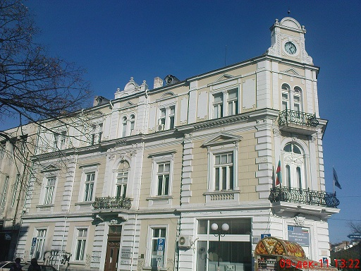

 Доходното здание
{kind=link}
Доходното здание е архитектурна забележителност в центъра на Русе, построена в периода 1898-1902 г. с цел да приюти театралните представления в града. Проектът е дело на виенския архитект Паул Бранк. Името произлиза от идеята сградата да носи на тогавашното училищно настоятелство доходи от наемите за театралния салон, библиотеката и предвидените казино и магазини. В днешно време Доходното здание се счита за паметник на културата и един от символите на града, редом с Паметника на Свободата. Фасадата на сградата е в стил неокласицизъм, украсена с пластични орнаменти, архитектурни детайли и скулптурни фигури, символизиращи земеделието и войната. Интериорът е също декориран с гипсови форми. На върха на сградата има статуя на крилатия Меркурий. При построяването на Доходното здание е проявена голяма настойчивост от русенската общественост. Поради завишаване на предвидените разходи се е наложило да се тегли заем от банка Гирдап, да се заложат средства на училищното настоятелство и на общината, както и самата сграда. Проектът е предаден недовършен, но през следващите години недостроеният театрален салон е окончателно завършен, докато през това време представленията са били изнасяни в казиното.
 Акционерно спестително дружество „Гирдап“
{kind=link}
Акционерно спестително дружество „Гирдап“ е първата частна банка в България, основана през 1881 г. в Русе. По време на своето съществуване „Гирдап“ е една от двете големи български банки с предимно местен частен капитал, наред с Българска търговска банка (БТБ). В момента сградата на банката се използва от Сметната палата. То е най-честото място за среща на русенци, наричано често „Часовникът“. „Гирдап“ е първото българско кредитно акционерно дружество. То е основано през 1881 година от видни русенски финансисти и търговци, сред които Христо Армянов и брат му Коста Армянов (бъдещ заместник-кмет на Русе), с начален капитал 750 лева, като до края на годината са продадени акции за 6900 лева. Първоначално дружеството има срок на съществуване 5 години, който впоследствие е неколкократно удължаван. От самото начало на съществуването си банката е свързана с политическите партии. Докато основаната малко по-късно БТБ е близка до Народната партия, „Гирдап“ е тясно свързана с Народнолибералната партия. Двете банки често се конкурират за общински заеми, като използват политическите си връзки. Дейността на банката нараства по време на стопанския възход на страната през първото десетилетие на 20 век. През 1911 година капиталът и? вече е 2 милиона лева, а обемът на пласментите — 12 милиона лева. Към 1912 година тя е третата по големина частна банка след БТБ и свързаната с Дойче банк Българска кредитна банка, въпреки че частният банков сектор в страната е сравнително малък. Печалбата на банка „Гирдап“ за 1912 година възлиза на 359 671,15 лева. Близка до правителството по време на Първата световна война, „Гирдап“ активно се включва в масовото създаване на акционерни дружества през 1917–1918 година, много от които се оказват безперспективни. Банката участва в предприятия като Първо българско за цимент акционерно дружество „Лев“ — Плевен, „Мини Курило“, „Модерен театър“, Българска македонска банка, в които значителни дялове имат и нейните основни акционери Бончо Боев, Иван Ковачев и Никола Ковачев. След войната кръгът около банка „Гирдап“ губи политическите си протекции и изпада в немилост. През 1919 година Бончо Боев е интерниран в Берковица, а на следващата година Иван Ковачев е обвинен по Закона за съдене на виновниците за националните катастрофи, заради кредит, отпуснат на видния радославист Никола Алтимирски. Боев прекарва осем месеца в затвора, заподозрян в помагачество, но е оправдан. През част от това време властите държат запечатани касите на банката.